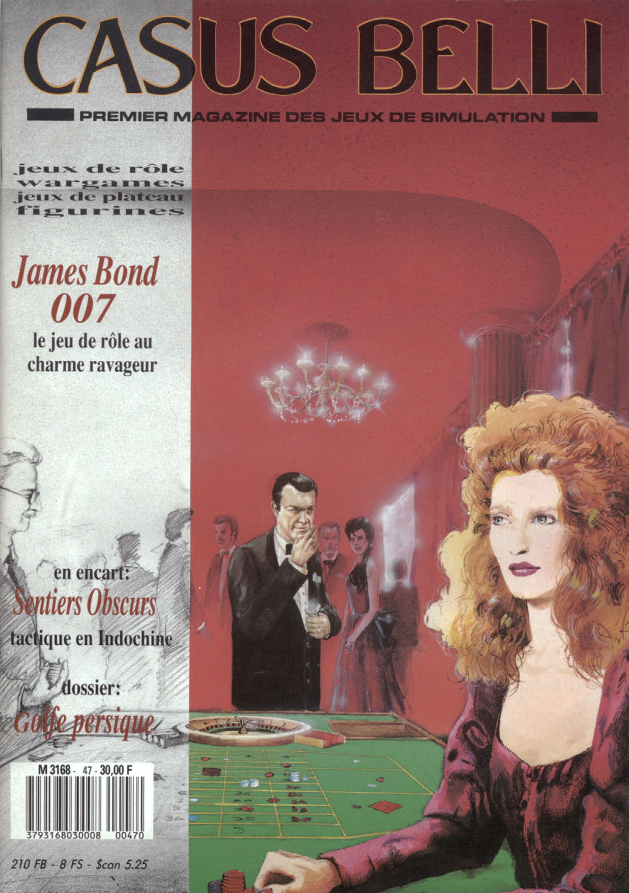
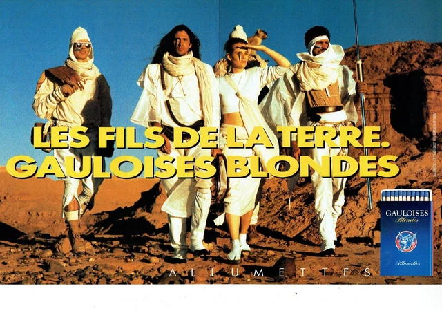

Et voici le CB 47 de septembre-octobre 1988, dont je voulais rattraper le retard mais la résistance du continuum espace-temps de cette fin 2023 m’en a empêché… La couverture est signée Cyril Renaud et met en valeur la VF de James Bond qui a les honneurs de ce Casus, mais cache aussi un autre jeu contemporain plus bien de chez nous, Trauma.

Petite remise en situation historique d’abord. Après l’été 1988 et une actualité bien calme en France, c’est maintenant la rentrée et elle est elle-même assez paisible. Deux faits remarquables cependant :
- bien qu’on soit repassé sous un gouvernement de gauche, un certain nombre de grèves émaillent cette période : les infirmières, la Poste (ce qui va provoquer une scission dans la CFDT et la création de Sud PTT), les surveillants de prison. Actualité donc chargée sur le front social sur ces deux mois, et certainement dans le quotidien de l’époque (ça se ressentira aussi sur la partie JDR comme on pourra voir dans le Casus suivant)
- le film de Scorcese La Dernière Tentation du Christ sort au cinéma et va déclencher un terrorisme intégriste, qui rappelle que ce n’est pas l’exclusivité de l’Islam. Deux cinémas sont attaqués, un à Besançon et celui de Saint Michel à Paris. Même si j’étais encore un peu jeune pour visionner ce genre de film, je garde un souvenir vivace de ces événements, qui ont certainement aussi nourri CROC sur la parution d’un INS / MV qui allait suivre quelques mois après
Ailleurs dans le monde, on pourrait encore parler de la Palestine qui est toujours dans sa première Intifada depuis le début de l’année et dont ce mouvement populaire et spontané consacre une faillite politique qu’on constate encore.
Ironie tragique de l’Histoire, c’est avec cette Intifada que le Hamas prend son essor, tandis que l’OLP d’Arafat doit infléchir sa politique jusqu’ici radicale : reconnaissance d’Israël, redéfinition du projet d’un Etat Palestinien dans les limites d’avant 1967 et non d’avant l’établissement d’Israël… Mais dans le monde étendu arabophone, c’est désormais en Algérie que les événements se précipitent avec des troubles populaires qui éclatent dans le pays sur fond de corruption et de sclérose du pouvoir, qui seront très durement réprimées et vont faire le lit du FIS à venir, et d’un islamisme violent qui va éclore et se propager…
Toujours en Afrique, partons beaucoup plus au sud car il n’y a pas que le Bloc Soviétique qui voit la fin d’une époque. L’Apartheid vit lui-même ses dernières années : maintenant que la guerre civile en Angola se termine, l’Afrique du Sud redevient le partenaire infréquentable, mais désormais plus nécessaire, qui pouvait être soutenu par les démocraties occidentales pour conjurer la contagion communiste et le contingent cubain déployé alors dans cette région. L’Afrique du Sud tente à assouplir cet Apartheid avec des élections municipales plus ouvertes, mais encore lourdement ségréguées et c’est un échec politique majeur, avec un boycott massif à l’intérieur du pays et une non reconnaissance par les Nations Unies.
A propos du Bloc Soviétique, tandis que Gorbatchev poursuit ses réformes intérieures, les RSS à l’intérieur même de l’URSS s’agitent : après le conflit entre l’Arménie et l’Azerbaïdjan du début d’année, c’est la RSS d’Estonie qui proclame sa souveraineté, les Pays Baltes étant à la pointe du désir d’émancipation et d’éclatement de l’URSS (mais la route sera encore longue, même après la Chute du Mur de Berlin).
Beaucoup plus à l’Ouest, les élections américaines battent leur plein pour consacrer en novembre la victoire écrasante (426 grands électeurs contre 111 pour Dukakis) de George Bush – le père. Un petit mot de ces élections qui peuvent paraître éloignées, mais lesquelles on retrouve un (relativement) jeune Joe Biden (46 ans) qui concoure dans la Primaire Démocrate !
On assiste aussi à une moralisation de l’atmosphère politique où le candidat favori avant Dukakis, Gary Hart, fait les frais d’une révélation d’une liaison extra-conjugale et nie celle-ci, comme un certain Bill Clinton quelques années plus tard sous sa présidence… Ce qui domine les débats alors n’est plus la menace militaire de l’Union Soviétique, mais celle économique du Japon : coucou les jeux Cyberpunks qui vont bientôt débouler en mettant en scène un Japon omniprésent avec ses zaibatsus devenues des megacorporations sans scrupule.
Vu mon retard pris, on ne traîne pas ensuite pour rentrer dans ce numéro 47. Avant d’explorer les nouveautés de cette rentrée, plein d’informations sur les manifestations passées suite au bug du numéro 46.
On a déjà un gros topo avec la GenCon 1988, organisée par TSR et couplée cette fois-ci avec Origins, l’autre grosse conv US. J’en retiendrai avec mon regard 2023 surtout la fascination des envoyés de Casus pour la salle des jeux micros, reliés en ligne (on est pourtant encore en 1988), ainsi qu’une longue interview d’André Moulin chez TSR qui consacre l’éviction définitive de Gygax : on annonce fièrement la sortie de Buck Rogers (grâce à l’héritage familial de Lorraine Williams), et la 2ème édition d’AD&D à venir pour 1989, ainsi qu’un projet de tournois AD&D en Europe qui ne verra jamais le jour (pas plus que le film Dragonlance qui est très brièvement évoqué).
Sur le reste des conventions passées, il est question du FSO et du FLIP 1988 qui vivent alors leurs beaux jours, ou des GN d’envergure à Vervors (sur 8 jours !), à Provins (sur Maléfices), ou encore le GN promotionnel de Gauloises Allumettes, Les Fils de la Terre, dont les costumes et les photos psychédéliques reproduites laissent aussi songeurs que leur spot de pub

Cette partie étant copieuse avec ce numéro, le reste du rédactionnel est plus réduit qu’à l’accoutumée : pas de rubrique BD / SF pour cette fois-ci, des petites polémiques autour du Barbare Déchaîné (Pierre, retire ta cagoule, on sait que c’est toi maintenant !), et avec le retour courroucé des auteurs du scénario Le Charognard étrillé dans le numéro précédent… Ca bouge en rôlisterie, au point que le Barbare s’en prend aussi aux minitélistes et à leurs débats en un peu vains sur le nouveau 3615 Casus, qui ont déjà les parfums de nos Marronniers.
On commence aussi à avoir les premiers résultats du CB Echo : coucou le patriarcat oppresseur, car sans surprise 98% des répondants sont de sexe masculin ! Ca doit être la faute à l’héritage masculiniste des wargames puisque 48% des répondants déclarent les pratiquer. Pourtant quand on gratte un peu, la réalité semble un peu moins caricaturale : les 15-17 ans représentent alors le plus gros des répondants (37%), et 21% des répondants déclarent jouer aussi en couple. L’oppression semble donc être qu’on ne laisse pas la gent féminine accéder à Casus, shame !
C’est aussi dans cette petite rubrique sur les retours du CB Echo qu’apparaît le terme rôliste, probablement pas pour la première fois, mais que Casus Belli officialise désormais dans sa syntaxe éditoriale, par rapport à la version concurrente rôleur qui circule encore. Là encore, merci Pierre !
Parlons des JDR maintenant. C’est la rentrée et les nouveautés sont aussi plus nombreuses maintenant que tout le monde reprend le travail. Côté VF, il y a du lourd avec les sorties prochaines de Descartes qui fait évoluer considérablement son modèle avec de la traduction de jeux phare : Warhammer à venir, et le développement des gammes Star Wars (Le Guide) et James Bond (le Manuel Q et le scénario Dr No). Oriflam pour sa part s’installe durablement sur un modèle similaire à Descartes : parution de Hawkmoon en VF et Les Dieux de Glorantha poour Runequest, la campagne Le Voleur d’Âmes pour Stormbringer. Modèle qui va se confirmer dans le futur car la tentative d’incursion dans la création française annoncée, avec la parution prochaine de Multi-Mondes, restera ensuite dans les mémoires comme le four retentissant de Michel Gaudo & Co… Là encore, on en reparlera.
Maintenant que Transecom a enfin sorti la VF complète d’AD&D 1ère édition, et que la 2ème édition n’est plus un secret confidentiel, l’éditeur s’échine à rester dans la course : les 2 premiers Gazeteers pour D&D sont disponibles en VF (et malheureusement aucun autre par la suite), et la traduction des Forgotten Realms est elle-même prévue.
Côté VO, ce n’est pas l’avalanche malgré le retour de la GenCon : est-ce les signes flagrants de la fin de l’Âge d’Or ? On se contentera donc chez Chaosium de Genertela pour Glorantha à paraître, chez GDW de l’anecdotique 2300 AD en attendant la gamme Space 1889 (dont le jeu de plateau Sky Galleons of Mars est déjà disponible pour faire saliver sur la suite). Et chez TSR du neuf avec du vieux avec Greyhawk Adventures. Face à cette disette, Jorune continue son chemin et fait presque impression d’un jeu prolifique avec la sortie de Earth Tec Jorune.
Les Têtes d’Affiche sont consacrées à Hawkmoon dont @Tristan dit déjà le plus grand bien de cette VF par rapport à la VO, et à la boîte Marvel Super Héros chez Schmidt (qui s’occupe déjà de l’Oeil Noir), et donc très orientée initiation. Là encore, malgré sa qualité vantée par Casus, le jeu n’aura pas pris, la faute à un marché qui annonce sa saturation ou à une culture comics encore trop confidentielle de notre côté de l’Atlantique ?
Côté supplément, on trouvera une critique du Greyhawk Adventures sans Gygax, et qui finit donc de solder son héritage chez TSR comme le relève Pierre Rosenthal (d’autant que le supplément est déjà estampillé compatible avec la future 2ème édition, s’il fallait un dernier outrage !). Il est aussi question du supplément fourre-tout Le Maître des Runes pour Runequest, ou High Stakes Gamble pour Top Secret (dont le contenu furieusement 80’s m’a alléché et que je pensais trouver pour une bouchée de pain en occaz vu sa confidentialité, mais c’est visiblement peine perdue…). Enfin, et preuve que je n’avais pas trop déraillé sur ma revue précédente, la sortie en VF de Zone Mortelle pour Blood Bowl 1ère édition côtoie la sortie en VO de la 2ème édition du jeu puisque les deux opus sont critiqués.
Les deux Épreuves du Feu sont donc consacrées à James Bond 007 et Trauma, jouant sur les mêmes ambiances mais dans des registres très différents. L’EdF de Trauma est d’ailleurs bien plus expéditive (1 page contre 3,5 pour JB007), et fait plus la part belle à la polémique autour de ce jeu depuis sa parution dans les pages de Chroniques d’Outre Monde.
Qui dit EdF à l’époque dit court scénario, un pour JB007 tout à fait sympathique et à proposer pour des parties courtes avec des jeux d’espionnage plus récents et plus légers (comme White Lies par exemple chez @Le Grümph), et un qui tire sur les spécificités de Trauma : se jouer soi-même, et avec un second degré très assumé. Cela permet donc de bien démarquer les deux jeux.
Avant de passer aux scénarios, il nous reste une dernière revue / critique avec une présentation de la gamme Universom du Siroz des origines (avant que Croc ne rejoigne la bande) qui prend des allures de ce qui allait devenir la rubrique Portrait de Famille. On retrouve ici les 3 jeux existant de la gamme alors : Silrin et Koros, et le fameux Berlin XVIII.
Or donc l’encart Scénarios en propose 4 : un Maléfices par Tristan qui est alors l’auteur de référence sur le jeu avant d’être celui sur Cthulhu, et qui exploite astucieusement les inondations de 1910 mais qui est trop court pour offrir une intrigue très élaborée (j’ai préféré personnellement le précédent du numéro 42) ; un Stormbringer qui fera plaisir à @nonolimitus et tous ceux qui ont gardé un amour particulier de la 1ère édition : bien que signé par Eric Simon, il reste très basique. Et enfin deux scénarios par des auteurs qui ne commettront que cette production : un Légendes de la Table Ronde très bof, qui ne mérite pas vraiment d’être repris dans Pendragon à part peut-être pour le décor, et un Warhammer que je trouve également oubliable. Bref, si vous mettez la main sur un Casus 47 à qui il manque l’encart, vous ne loupez pas des productions d’anthologie.
En guise de lot de consolation, l’Inspi Ciné est consacrée au film Histoire de Fantômes Chinois, et s’évertue de le scénariser comme Prison quelques numéros avant. On va dire que la réussite incertaine de l’entreprise pour faire de cette rubrique un élément plus cohérent avec le reste de Casus signe probablement l’arrêt définitif de celle-ci avec ce numéro…
On termine la partie JDR avec l’aide de jeu Bâtisses et Artifices signée par Brigitte Brunella et consacré au logis médiéval : superbes illustrations et plans, et superbe texte.
Le nouvelle rubrique Jeu de Plateau vient nous présenter deux monstres nouveaux de l’époque : Full Metal Planète et Britannia, en ce temps où quand on était amateur de platal, les seuls jeux avec des mécanismes intéressants pas uniquement soumis à l’aléatoire requéraient plusieurs heures pour une session.
La partie Wargame laisse deviner l’évolution de la géopolitique après la décennie 1980 : le dossier est consacré au Golfe Persique, avec notamment la sortie de Gulf Strike II. Celle-ci sort de l’affrontement prédominant URSS – US de la 1ère édition qui datait de 1983 pour se concentrer sur les micro-conflits locaux (avec un scénario qui propose notamment l’invasion du Koweït par l’Iran !), et toute la dimension justement géopolitique qui prédomine et ne laisse pas la décision uniquement sur le champ de bataille. Dimension qui est développée ensuite par un dossier de deux pages de Laurent Henninger sur l’introduction du wargame dans ses cours à une classe préparatoire à Sciences Po, où il a pris soin de répartir son groupe d’étudiants en plusieurs Etat-Majors pour fixer cette composante politique, et pas seulement militaire. Encore très sympa à lire !
On reste enfin dans les conflits de « basse intensité » avec comme wargame Sentiers Obscurs qui propose de simuler la guerilla d’escarmouche dans l’Indochine de 1950-1954. Le dossier se termine avec 3 aides de jeu – scénarios courts (1 page chacun) pour Tank Leader, Siège / Cry Havoc et Guuet Apens. Bref, le wargame est encore copieux à cette date dans les pages de CB !
Je donne rendez-vous dans pas trop tard pour aborder le Casus 48 qui clôturera une année 1988 dans un monde qu’on croit encore très statique mais qui est à la veille d’une nouvelle ère !